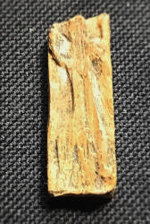
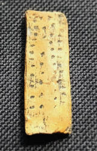
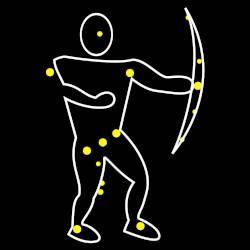
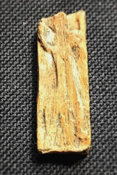
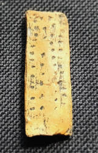
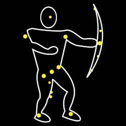

The Adorant
The oldest known human picture is a very small ivory plate with an humanoid engraving on one side.
It was found 1979 in the Geißenklösterle near Blaubeuren.
The material is mammoth ivory and it was dated 35,000 years old.
This is 2,000 years older than the
 lionheaded figurine
from the Stadel im Hohlenstein in the
lionheaded figurine
from the Stadel im Hohlenstein in the
 Lone valley.
Lone valley.
The Adorant has long been called the oldest human sculpture ever found in Europe. The reason for this is simply that the lion man was originally dated to an age of 32,000 years, while the adorant was dated to 35,000 years. In the meantime, the dates have been revised upwards, but an age of between 35,000 and 40,000 years is given for both, as well as for the Venus figure discovered in 2008. In general, the finds from Lonetal and Blautal are the oldest known figurative works of art known to mankind, only the cave paintings are even older. This is also the reason why Lonetal and Blautal were included on the UNESCO WHL in 2017.
A figure is depicted, carved as a flat relief and holding its arms outstretched upwards at an angle. The legs are also turned outwards. The figure is obviously male, as it has unusually large genitals. The posture is interpreted as a ritual gesture, although it is not certain whether it is a praying, dancing person or a shaman performing a ritual act. Hence, the name Adorant or worshipper; the posture was later used to describe people worshipping something. This depiction is definitely unusual. Figures with comparable depictions were not found until 20,000 years later in the Magdalenian period.
The figurine was most certainly worn as an amulet and has mysterious engravings on the back. The meaning of these engravings is still unclear.
"Orion, in astronomy, major constellation..., named for the Greek mythological hunter. Orion is one of the most conspicuous constellations and contains many bright stars." Encyclopædia Britannica
A recent work by Michael A. Rappenglück interprets the amulet as a kind of star map. The figure is interpreted as a visualization of the constellation Orion. The constellation Orion is represented by a human (male) figure standing with bent knees until today. Hunter with weapons in general. Even the huge genitals are explained by a group of stars. The proportions are not completely correct, but they fit the location of the stars 35,000 years ago, which we are able to reconstruct. The dots on the back could be used to aim at the stars and thus orientate using the stars of the Orion. The amulet could be interpreted as an early predecessor of the compass.
 





Literature
- Michael A. Rappenglück (1999):
Eine Himmelskarte aus der Eiszeit? Ein Beitrag zur Urgeschichte der Himmelskunde und zur paläoastronomischen Methodik,
Frankfurt am Main: Peter Lang Europäischer Verlag der Wissenschaften.

- Michael A. Rappenglück (2003): The Anthropoid in the Sky: Does a 32,000-year Old Ivory Plate Show the Constellation Orion Combined with a Pregnancy Calendar?, In: Calendars, Symbols, and Orientations: Legacies of Astronomy in Culture: Proceedings of the 9th Annual Meeting of the European Society for Astronomy in Culture (SEAC). The Old Observatory, Stockholm, 27–30 August 2001, Mary Blomberg, Peter E. Blomber, und Göran Henriksson, editors. pp 51-55, Uppsala: Uppsala University. academia.edu
- Ewa Dutkiewicz (2023):
Die Kosmologie der Altsteinzeit,
In: Kosmos. Vom Umgang mit der Welt zwischen Ausdruck und Ordnung. pp. 29-63, Heidelberg University Publishin.
pdf
DOI
 Search Google for "The Adorant Geißenklösterle"
Search Google for "The Adorant Geißenklösterle" Adorant from the Geißenklösterle cave - Wikipedia (visited: 24-APR-2025)
Adorant from the Geißenklösterle cave - Wikipedia (visited: 24-APR-2025) Don’s Maps - The Adorant - The Worshipper (visited: 24-APR-2025)
Don’s Maps - The Adorant - The Worshipper (visited: 24-APR-2025) Index
Index Topics
Topics Hierarchical
Hierarchical Countries
Countries Maps
Maps Search
Search{kind=link}
{kind=link}
{kind=link}
{kind=link}